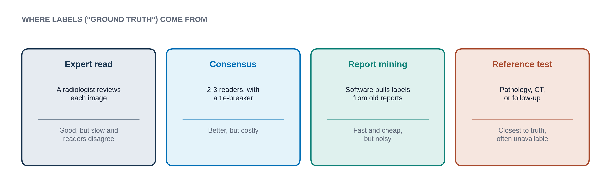
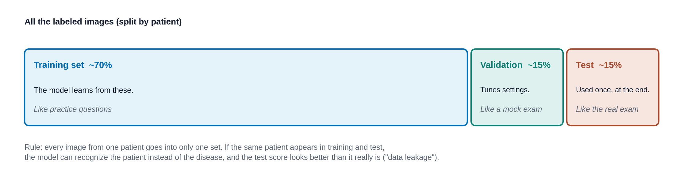

The data radiology AI uses, where the "right answers" come from, and how data is split for testing
A supervised model can only be as good as the examples and labels it learned from. This lesson looks at what goes into a model like PTX-Detect: the kinds of data, who decides the "right answer", and how developers keep some data aside to test the model honestly. About 15-20 minutes.
By the end of this lesson you can:
Different kinds of data feed different kinds of models. Click through the four main types.
The main input for most radiology AI, including PTX-Detect
X-rays, CT, MRI, ultrasound and mammograms. To a computer, an image is a grid of numbers, one per pixel, giving its brightness. Hospital images are stored in a format called DICOM, which also carries extra information such as the scanner type and patient position (Lesson 2.2 covers DICOM in detail). Image models are usually convolutional neural networks (Lesson 1.2).
Free text, handled by language models
Radiology reports, clinic notes and referral letters hold a lot of information in ordinary sentences. Language models (including LLMs) can pull findings out of reports, draft impressions or flag follow-up recommendations. Old reports are also a cheap source of labels for image models, as you will see below.
Rows and columns from the health record
Age, sex, lab values, vital signs, diagnoses and past exams, stored as a table. Simpler machine learning models often use this kind of data, and it can be combined with images.
| Variable | Value | Type |
|---|---|---|
| Age | 67 | Number |
| Sex | Female | Category |
| Creatinine | 1.4 mg/dL | Number |
| Prior CT in 90 days | Yes | Yes / no |
| Reason for exam | Rule out PE | Text |
The answer key that supervised models learn from
An annotation is the "right answer" attached to an example. It can be a single word for the whole image (pneumothorax: yes or no), a box drawn around a finding, or an exact outline of it (a segmentation). More detailed labels take longer to make and teach the model more.
For PTX-Detect, every training film needed a label: pneumothorax yes or no. The label is treated as the truth, so it is often called ground truth. But someone had to decide it, and there are several ways to do that:

Labels can be wrong for many reasons. Radiologists disagree with each other on subtle films. Reports are written for clinicians, not for computers, so software that mines them misreads phrases like "no definite pneumothorax" or "pneumothorax has resolved." And sometimes the true answer is not knowable from the image alone.
If 10% of the labels are wrong, the model learns those mistakes as if they were correct, and the test score is measured against a flawed answer key.
You are one of three readers labeling films for PTX-Detect. Read each short description and choose a label. Then see how the other two readers labeled it. There is no right answer here; the point is how often readers differ.
A normal frontal chest X-ray, to sit beside the activity.
A chest X-ray with a clear pneumothorax, ideally with the edge of the lung outlined by an expert (shows what a label looks like).
From Lesson 1.2 you know a model must be checked on data it never trained on. So before training starts, developers split their labeled data into three parts:

These steps are shuffled. Drag them into the order a careful team would follow, then check.
Data leakage happens when information from the test set sneaks into training, so the test becomes easier than real life. Common forms:
Leakage makes a model look better on paper than it will be in practice. When you read about an AI tool, it is fair to ask: was the test set split by patient, and did it come from a different hospital?
A model only learns what is in its data. If PTX-Detect was trained only on adults at one city hospital, it has never seen a child, a rural clinic's older scanner, or many patients from groups that hospital rarely serves. It may still give confident answers for them, without having learned anything about them.
So two questions to ask of any dataset: who is in it, and who is missing? Lesson 1.5 shows what happens when a model meets patients unlike the ones it learned from.
Answer each question to continue. Any answer is fine; read the explanation.
Why is the test set kept separate until the very end?
The test set is the "real exam." If the model or its developers saw it during training, the score would show how well it memorized, not how it will do on new patients.
A team splits 20,000 chest X-rays into training and test sets at random, film by film. Many patients had several films. What is the problem?
Splitting by film instead of by patient lets one person's films land on both sides. The model can then recognize the patient rather than the finding, and the test score comes out too high.
Labels for a model were mined automatically from old radiology reports. What is a likely weakness?
Report mining is fast and cheap, but noisy. Hedged or negative phrases are easy to misread, and the report may describe something not visible on that particular image.
Next lesson: once PTX-Detect is trained and tested, how do we describe how good it is?